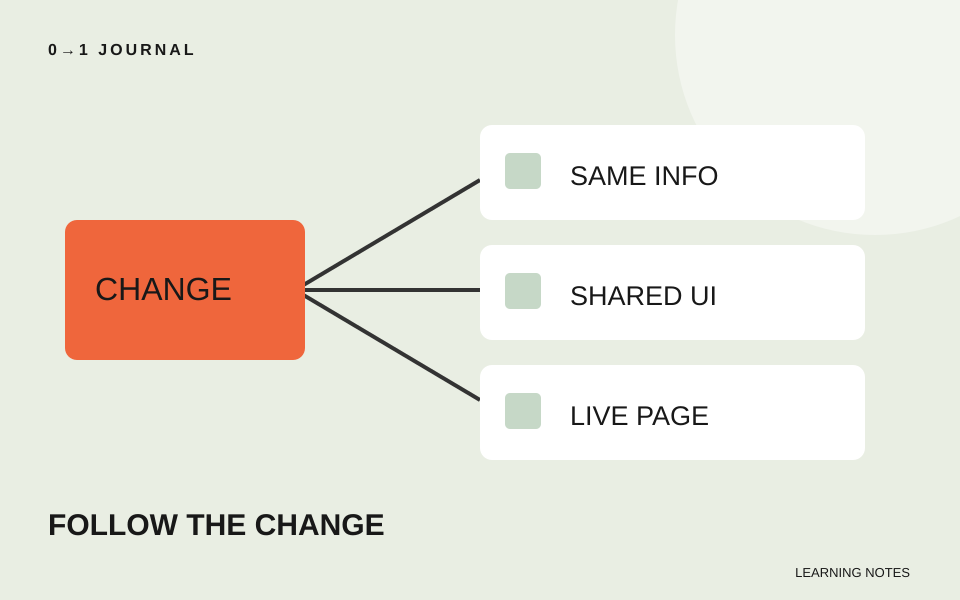

この記事の目次
案内文を一か所直した後、どこまで見直せばよいか迷う。更新後に確認する範囲を決めるには、ページ数だけでなく、変更したものがどこで使われるかをたどります。
この記事は、架空の貸しアトリエの練習サイトを使った編集部の提案です。実案件の障害記録ではありません。更新前のトップ、設備案内、利用案内の三ページを手元に用意した想定で、確認表の作り方を説明します。
「利用案内を修正した」を、二つの変更へ分ける
今回の練習では、利用案内の受付時間を直し、全ページで使う案内ボタンの余白も変えたとします。同じ日に行った作業でも、確認する対象は異なります。受付時間は掲載情報、ボタンの余白は共通の見た目です。
最初に変更前と変更後を並べ、何を変えたかを一行ずつ書きます。「デザインを調整」では範囲をたどれません。「案内ボタンの左右の余白を変更」のように、対象を特定できる表現にします。
更新前に戻せる状態を準備する手順は、バックアップの対象を決める記事で扱っています。ここでは保存の方法ではなく、変更後にどのページで何を確かめるかへ進みます。
同じ情報と、同じ部品を別々に探す
受付時間を直したなら、同じ時間がトップの短い案内にも書かれていないかを探します。別の文章で同じ内容を伝えている場所も対象です。ファイル内で数字を検索するだけでなく、サイト内でその案内へ進む経路も読んでください。
ボタンの余白なら、その見た目の指定を共有する場所を探します。トップの短い「利用案内」と、設備ページの長い「設備を確認して利用案内へ」で、同じ変更でも表示結果は違うかもしれません。文言の長いものを確認対象へ含めます。
編集したファイルだけを開くのが失敗例です。修正案は、同じ情報を載せる場所と、同じ部品を使う場所を別々に書き出すこと。探す軸を分けると、文章の食い違いと見た目の影響を混同せずに確認できます。
確認表には、操作と期待する結果を書く
今回の模擬サイトなら、次のような表を作れます。これは確認を終えた報告ではなく、これから実行する項目です。
| 変更 | 確認先 | 操作と期待する結果 |
|---|---|---|
| 受付時間 | 利用案内とトップ | 両方を読み、同じ受付時間になっている |
| 共通ボタンの余白 | 設備案内 | 狭い画面で長い文言が欠けずに読める |
| 共通ボタンの余白 | トップ | ボタンを押し、利用案内へ進める |
「正常」とだけ書くより、何が起きればよいかを先に決めます。結果を記録するときは、確認したURL、画面幅、実際に起きたことを添えます。未実施の行には印を付けず、未確認と書いて残してください。
三ページの小さな練習サイトなら全ページを見る選択もできます。大きなサイトで代表ページを選ぶ場合は、文言の長さや配置の違いを選定理由にします。代表例が通ったことを、その部品の全配置を確認したという意味に広げません。
公開先で、修正した内容そのものを照合する
手元で確認した後に公開した場合、公開URLでも受付時間やボタンの文言を見ます。ページを開けたことだけでは、今回の版になったかは判断できません。変更前後で違う具体的な文字や表示を目印にしてください。
公開先が古い内容なら、確認表を合格にせず、どの環境で新しい内容を見たかを分けて記録します。公開の仕組みを調べる間も、原因を決めつけず「手元は変更後、公開先は変更前」と観察した事実を残します。
15分で、一つの更新から三行の確認表を作る
自分の練習サイトで小さな変更を一つ選び、直接変えた場所、同じ情報がある場所、同じ部品がある場所を書きます。該当しない欄は無理に埋めず、その理由を記してください。
次に各行へ操作と期待する結果を付け、実際に確認できた行だけ結果を記入します。無料レッスンで作ったページを使う場合は、複製した練習ページ同士で案内文の一致を確かめても構いません。確認表の完成と、表に書いた確認の完了を分けて扱いましょう。
記載内容へのご質問や訂正のご連絡は、hello@junkbranding.comまでお願いします。